Note
Go to the end to download the full example code
Exercices expliqués de programmation#
Quelques exercices autour de la copie de liste, du temps de calcul, de l’héritage.
Copie de listes#
La fonction somme est censée faire la concaténation de toutes les
listes contenues dans ens. Le résultat retourné est effectivement
celui désiré mais la fonction modifie également la liste ens, pourquoi ?
[0, 1, 2, 3]
[[0, 1, 2, 3], [2, 3]]
Le problème vient du fait qu’une affectation en python
(seconde ligne de la fonction somme ne fait pas une copie
mais crée un second identificateur pour désigner la même chose.
Ici, l et tab[0] désignent la même liste, modifier l’une
modifie l’autre. Ceci explique le résultat. Pour corriger,
il fallait faire une copie explicite de tab[0] :
[0, 1, 2, 3]
[[0, 1], [2, 3]]
Il était possible, dans ce cas, de se passer de copie en écrivant :
[0, 1, 2, 3]
[[0, 1], [2, 3]]
Erreur de logique#
Le programme suivant fonctionne mais le résultat n’est pas celui escompté.
['un', 'deux', 'deux', 'deux', 'cinq']
Ce programme est censé effectuer un tri par ordre alphabétique
décroissant. Le problème intervient lors de la permutation de
l’élément l[i] avec l’élément l[mi]. Il faut donc écrire :
['un', 'trois', 'quatre', 'deux', 'cinq']
Coût d’un algorithme#
Le coût d’un algorithme ou d’un programme est le nombre d’opérations
(additions, multiplications, tests, …) qu’il effectue. Il s’exprime
comme un multiple d’une fonction de la dimension des données que
le programme manipule. Par exemple :  ,
,
 ,
,  , …
, …
1.5
1.25
Tout d’abord, le coût d’un algorithme est très souvent exprimé comme un
multiple de la dimension des données qu’il traite. Ici, la dimension
est la taille du tableau tab. Par exemple, si on note n = len(tab),
alors le coût de la fonction moyenne s’écrit car cette
fonction fait la somme des n éléments du tableau.
La fonction variance contient quant à elle un petit piège. Si elle
contient elle aussi une boucle, chacun des $n$ passages dans cette boucle
fait appel à la fonction moyenne. Le coût de la fonction variance est donc
.
Il est possible d’accélérer le programme car la fonction moyenne
retourne le même résultat à chaque passage dans la boucle.
Il suffit de mémoriser son résultat dans une variable avant d’entrer
dans la boucle comme suit :
1.25
Le coût de la fonction variance est alors .
Le coût d’un algorithme peut être évalué de manière plus précise et
nécessiter un résultat comme $n^2 + 3n + 2$ mais cette exigence est
rarement utile pour des langages comme python. L’expression
for x in tab: cache nécessairement un test qu’il faudrait prendre en
compte si plus de précision était exigée. Il faudrait également se
tourner vers un autre langage de programmation, plus précis dans sa syntaxe.
Par exemple, lorsqu’on conçoit un programme avec le langage C ou C++,
à partir du même code informatique, on peut construire deux programmes
exécutables. Le premier (ou version debug), lent, sert à la mise au point :
il inclut des tests supplémentaires permettant de vérifier à chaque étape
qu’il n’y a pas eu d’erreur (une division par zéro par exemple).
Lorsqu’on est sûr que le programme marche, on construit la seconde version
(ou release), plus rapide, dont ont été ôtés tous ces tests de
conception devenus inutiles.
python aboutit à un programme lent qui inclut une quantité de tests invisibles pour celui qui programme mais qui détecte les erreurs plus vite et favorise une conception rapide. Il n’est pas adapté au traitement d’information en grand nombre et fait une multitude d’opérations cachées.
Héritage double#
On a besoin dans un programme de créer une classe carre et une classe
rectangle. Mais on ne sait pas quelle classe doit hériter de l’autre.
Dans le premier programme, rectangle hérite de carre.
class carre:
def __init__(self, a):
self.a = a
def surface(self):
return self.a**2
class rectangle(carre):
def __init__(self, a, b):
carre.__init__(self, a)
self.b = b
def surface(self):
return self.a * self.b
rectangle(3, 4).surface()
12
Dans le second programme, c’est la classe carre
qui hérite de la classe rectangle.
class rectangle:
def __init__(self, a, b):
self.a = a
self.b = b
def surface(self):
return self.a * self.b
class carre(rectangle):
def __init__(self, a):
rectangle.__init__(self, a, a)
def surface(self):
return self.a**2
carre(3).surface()
9
Dans le second programme, est-il nécessaire de redéfinir la méthode
surfacedans la classecarre?Quel est le sens d’héritage qui vous paraît le plus censé,
class rectangle(carre)ouclass carre(rectangle)?On désire ajouter la classe
losange. Est-il plus simple querectanglehérite de la classecarreou l’inverse pour introduire la classelosange? Quel ou quels attributs supplémentaires faut-il introduire dans la classelosange?
# Le principe de l'héritage est qu'une classe ``carre`` héritant de la classe
# ``rectangle`` hérite de ses attributs et méthodes. L'aire d'un carré est
# égale à celle d'un rectangle dont les côtés sont égaux, par conséquent,
# la méthode ``surface`` de la classe retourne la même valeur que celle de
# la classe ``rectangle``. Il n'est donc pas nécessaire de la redéfinir.
#
# * D'après la réponse de la première question, il paraît plus logique de
# considérer que ``carre`` hérite de ``rectangle``.
# * Un losange est défini par un côté et un angle ou un côté et la longueur
# d'une de ses diagonales, soit dans les deux cas, deux paramètres.
# Dans la première question, il paraissait plus logique que la classe
# la plus spécifique hérite de la classe la plus générale afin de bénéficier
# de ses méthodes. Pour introduire le losange, il paraît plus logique de
# partir du plus spécifique pour aller au plus général afin que chaque
# classe ne contienne que les informations qui lui sont nécessaires.
class carre:
def __init__(self, a):
self.a = a
def surface(self):
return self.a**2
class rectangle(carre):
def __init__(self, a, b):
carre.__init__(self, a)
self.b = b
def surface(self):
return self.a * self.b
class losange(carre):
def __init__(self, a, theta):
carre.__init__(self, a)
self.theta = theta
def surface(self):
return self.a * math.cos(self.theta) * self.a * math.sin(self.theta) * 2
losange(3, 1).surface()
8.183676841431136
Le sens de l’héritage dépend de vos besoins. Si l’héritage porte principalement sur les méthodes, il est préférable de partir du plus général pour aller au plus spécifique. La première classe sert d’interface pour toutes ses filles. Si l’héritage porte principalement sur les attributs, il est préférable de partir du plus spécifique au plus général. Dans le cas général, il n’y a pas d’héritage plus sensé qu’un autre mais pour un problème donné, il y a souvent un héritage plus sensé qu’un autre.
Précision des calculs#
Voici un aperçu de la précision des calculs pour le calcul 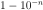. L’exercice a pour but de montrer que l’ordinateur ne fait que des calculs approchés et que la précision du résultat dépend de la méthode numérique employée.
0 0.9 0.1 0.31622776601683794
1 0.99 0.01 0.1
2 0.999 0.001 0.03162277660168379
3 0.9999 0.0001 0.01
4 0.99999 1e-05 0.0031622776601683794
5 0.999999 1.0000000000000002e-06 0.001
6 0.9999999 1.0000000000000002e-07 0.000316227766016838
7 0.99999999 1.0000000000000002e-08 0.0001
8 0.999999999 1.0000000000000003e-09 3.1622776601683795e-05
9 0.9999999999 1.0000000000000003e-10 1e-05
10 0.99999999999 1.0000000000000003e-11 3.1622776601683796e-06
11 0.999999999999 1.0000000000000002e-12 1.0000000000000002e-06
12 0.9999999999999 1.0000000000000002e-13 3.1622776601683797e-07
13 0.99999999999999 1.0000000000000002e-14 1.0000000000000001e-07
14 0.999999999999999 1e-15 3.162277660168379e-08
15 0.9999999999999999 1.0000000000000001e-16 1e-08
16 1.0 1e-17 3.1622776601683795e-09
17 1.0 1e-18 1e-09
18 1.0 1.0000000000000001e-19 3.1622776601683795e-10
Le programme montre que l’ordinateur affiche 1
lorsqu’il calcule 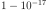.
Cela signifie que la précision des calculs en python
est au mieux de 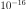.
C’est encore moins bon dans le cas de float ou
réel simple précision codé sur
4 octets au lieu de 8 pour les double.
x = numpy.float32(1.0)
for i in range(0, 19):
x = x / numpy.float32(10)
print(i, "\t", 1.0 - x, "\t", x, "\t", x ** (0.5))
0 0.8999999985098839 0.1 0.3162277683729184
1 0.9900000002235174 0.01 0.0999999988824129
2 0.9990000000689179 0.0009999999 0.03162277551199656
3 0.9999000000098022 9.999999e-05 0.009999999509891484
4 0.9999900000011621 9.999999e-06 0.0031622774764217087
5 0.9999990000001162 9.999999e-07 0.0009999999418942008
6 0.999999900000013 9.999999e-08 0.0003162277453952373
7 0.999999990000001 9.999999e-09 9.999999525523424e-05
8 0.9999999990000001 9.999999e-10 3.162277439909038e-05
9 0.9999999999 9.999999e-11 9.99999937286775e-06
10 0.99999999999 9.999999e-12 3.162277516708525e-06
11 0.999999999999 9.999999e-13 9.999999437919884e-07
12 0.9999999999999 9.999999e-14 3.162277525279896e-07
13 0.99999999999999 9.999999e-15 9.999999488741863e-08
14 0.999999999999999 9.999999e-16 3.162277498494361e-08
15 0.9999999999999999 9.999999e-17 9.999999422567411e-09
16 1.0 9.999999e-18 3.162277503725911e-09
17 1.0 9.999999e-19 9.999999712080637e-10
18 1.0 1e-19 3.1622776099917643e-10
On écrit une classe matrice_carree_2
qui représente une matrice carrée de dimension 2.
class matrice_carree_2:
def __init__(self, a, b, c, d):
self.a, self.b, self.c, self.d = a, b, c, d
def determinant(self):
return self.a * self.d - self.b * self.c
m1 = matrice_carree_2(1.0, 1e-6, 1e-6, 1.0)
m2 = matrice_carree_2(1.0, 1e-9, 1e-9, 1.0)
print(m1.determinant())
print(m2.determinant())
0.999999999999
1.0
La seconde valeur est donc fausse. On considère maintenant la matrice 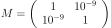.
On pose 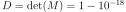 et 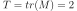. 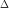 est le déterminant de M et T sa trace. On sait que les valeurs propres de M notées 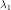, 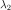 vérifient :
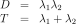
On vérifie que 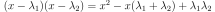. Les valeurs propres de $M$ sont donc solutions de l’équation : 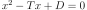.
Le discriminant de ce polynôme est 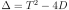. On peut donc exprimer les valeurs propres de la matrice M par :
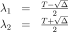
On ajoute donc la méthode suivante à la classe matrice_carree_2 :
class matrice_carree_2:
def __init__(self, a, b, c, d):
self.a, self.b, self.c, self.d = a, b, c, d
def determinant(self):
return self.a * self.d - self.b * self.c
def valeurs_propres(self):
det = self.determinant()
trace = self.a + self.d
delta = trace**2 - 4 * det
l1 = 0.5 * (trace - (delta ** (0.5)))
l2 = 0.5 * (trace + (delta ** (0.5)))
return l1, l2
m1 = matrice_carree_2(1.0, 1e-6, 1e-6, 1.0)
m2 = matrice_carree_2(1.0, 1e-9, 1e-9, 1.0)
print(m1.valeurs_propres())
print(m2.valeurs_propres())
(0.9999990000110609, 1.000000999988939)
(1.0, 1.0)
D’après l’énoncé, les valeurs propres de la matrice  sont les
sommes de celles de la matrice I et de la matrice 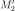.
Par conséquent, ce second calcul mène au résultat suivant :
sont les
sommes de celles de la matrice I et de la matrice 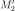.
Par conséquent, ce second calcul mène au résultat suivant :
l1 = 1-1e-9 = 0.99999999900000002828
l2 = 1+ 1e-9 = 1.000000001
La précision des calculs prend sont importance ici. On décompose la matrice 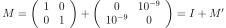.
On peut démontrer que si $lambda$ est une valeur propre de  ,
alors 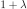 est une valeur propre de M.
Que donne le calcul des valeurs propres de $M”$ si on utilise la méthode
,
alors 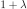 est une valeur propre de M.
Que donne le calcul des valeurs propres de $M”$ si on utilise la méthode
valeurs_propres pour ces deux matrices ?
On considère maintenant la matrice 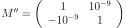. En décomposant la matrice 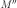 de la même manière qu’à la question 4, quelles sont les valeurs propres retournées par le programme pour la matrice ? Quelles sont ses vraies valeurs propres ?
La matrice n’est en fait pas diagonalisable, c’est-à-dire que
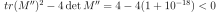.
Or le calcul proposé par la question 3 aboutit au même résultat faux que pour
la matrice , les deux valeurs propres trouvées seront égales à 1.
Si on applique la décomposition proposée :
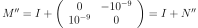.
Le programme calcule sans erreur le discriminant négatif de la matrice 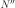
qui n’est pas diagonalisable. Il est donc impossible d’obtenir des valeurs
propres réelles pour la matrice avec cette seconde méthode.
Cette question montre qu’une erreur d’approximation peut rendre une
matrice diagonalisable alors qu’elle ne l’est pas. Il faut bien choisir
cette précision en fonction de la destination des calculs.
Total running time of the script: ( 0 minutes 0.020 seconds)